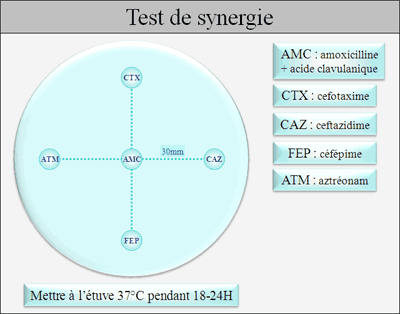
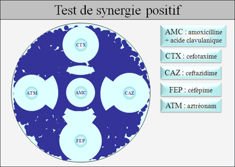
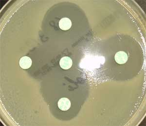

Entérobactéries
I) Résistance
naturelle des entérobactéries
Toutes les Entérobactéries : Pénicilline G, oxacilline, macrolides, kétolides,
lincosamides, acide fusidique, streptogramines, glycopeptides,
oxazolidinones
Klebsiella spp. :
amoxicilline, ticarcilline, pipéracilline
Citrobacter diversus :
amoxicilline, ticarcilline, pipéracilline
Citrobacter freundii : amoxicilline, amoxicilline + acide
clavulanique, C1G, céphamycines
Enterobacter cloacae : amoxicilline, amoxicilline + acide
clavulanique, C1G, céphamycines
Enterobacter aerogenes : amoxicilline, amoxicilline + acide
clavulanique, C1G, céphamycines
Serratia marcescens : amoxicilline, amoxicilline + acide
clavulanique, C1G, céfamandole, céfuroxime, colistine, polymyxine B
Proteus mirabilis : cyclines, colistines, polymyxine B,
nitrofuranes
Proteus vulgaris : amoxicilline, C1G, céfamandole, céfuroxime,
cyclines, colistines, polymyxine B, nitrofuranes
Morganella morganii : amoxicilline, amoxicilline + acide
clavulanique, C1G, cyclines, colistines, polymyxine B, nitrofuranes
Providencia stuartii : amoxicilline, amoxicilline + acide
clavulanique, C1G, cyclines, colistines, polymyxine B, nitrofuranes,
gentamicine
Yersinia enterocolitica : amoxicilline, ticarcilline,
pipéracilline, amoxicilline + acide clavulanique, C1G, céfoxitine,
céfamandole, céfuroxime
II) Antibiogramme
A) Résistance aux aminosides (gentamicine, amikacine)
La gentamicine (principalement en cas d’AAC(6’)-I
+/- BLSE) et l’amikacine (pour les autres phénotypes) sont les 2
aminosides les plus souvent actifs sur les entérobactéries.
L’utilisation des autres aminosides au sein de l’antibiogramme permet de
préciser le type d’enzyme inactivatrice. Providencia spp. : résistance naturelle à la
gentamicine, la tobramycine et la nétilmicine par production d’une
AAC(2’)-I.
B) Résistance aux quinolones
1) Quinolones de 1ère génération
L’interprétation est valable pour toutes les
quinolones de 1ère génération mais uniquement pour les
souches isolées dans les urines.
2) Fluoroquinolones
La norlfoxacine est la 1ère fluoroquinolone touchée par les résistances :
- si la norfloxacine est sensible, toutes les fluoroquinolones
sont sensibles - si la norfloxacine est intermédiaire ou résistante : la
résistance s’exprime à différents niveaux selon la fluoroquinolone
concernée (la réponse est donc indépendante pour chaque fluoroquinolone).
C) Résistance aux β-lactamines
Selon les auteurs, les entérobactéries sont classées en
4-6 groupes de résistance aux b-lactamines
1) Groupe 0
Résistance chromosomique :
aucun gène de résistance aux b-lactamines. Le phénotype sauvage est sensible à toutes
les b-lactamines. Résistance plasmidique :
principalement des pénicillinases de bas ou haut niveau, des TEM résistantes
aux inhibiteurs ou des b-lactamases à spectre élargie.
2) Groupe 1
Résistance chromosomique :
gène codant pour une céphalosporinase (ampC) mais l’expression de ce gène
est réprimée à l’état sauvage. Les souches sauvages sont donc sensibles à
toutes les b-lactamines
mais une mutation sur le promoteur du gène ampC peut provoquer l’expression
phénotypique de la céphalosporinase chromosomique. Certaines souches peuvent
exprimer à haut niveau cette céphalosporinase. Résistance plasmidique :
principalement des pénicillinases de bas ou haut niveau, des TEM résistantes
aux inhibiteurs ou des b-lactamases à spectre élargie (BLSE).
3) Groupe 2
Résistance chromosomique :
expression naturelle d’une pénicillinase de bas niveau. Des souches mutées
peuvent avoir un haut niveau d’expression de cette pénicillinase. Résistance plasmidique :
principalement pénicillinases de haut niveau, des BLSE, des TEM résistantes
aux inhibiteurs (voir très rarement des céphalosporinases de haut niveau).
4) Groupe 3
Résistance chromosomique :
expression naturelle d’une céphalosporinase (ampC) inductible. Des souches
mutées peuvent avoir un haut niveau d’expression de cette céphalosporinase. Résistance plasmidique :
principalement des pénicillinases de haut niveau, des BLSE (voir des TEM
résistante aux inhibiteurs ou des céphalosporinases de haut niveau).
5) Groupe 4
Résistance chromosomique :
expression naturelle d’une céphalosporinase et d’une pénicillinase Résistance plasmidique :
principalement des BLSE
6) Groupe 5
Résistance chromosomique :
expression naturelle d’une céfuroximase (céphalosporinase inhibée par
l’acide clavulanique). Il n’y a pas d’expression à haut niveau de cette
céphalosporinase. Résistance plasmidique :
principalement des pénicillinases de haut niveau et des BLSE
Différencier une BLSE d’une céphalosporinase de haut niveau : Test de synergie
Les BLSE sont plus ou moins inhibées par l’acide
clavulanique contrairement aux céphalosporinases de haut niveau. En cas de BLSE on peut observer une synergie d’action
entre l’acide clavulanique et une céphalosporinase de 3ème génération.
On place sur un milieu Mueller-Hinton un disque
contenant de l’acide clavulanique (amoxicilline + acide clavulanique)
entouré à 30mm de 4 disques : céfépime (ou cefpirome), céfotaxime,
ceftazidime, aztréonam.
Pour les Proteus spp. et Morganella morganii,
la BLSE s’exprime à bas niveau et il est conseillé d’espacer les disques à
40-45mm.
L’espacement des disques peut être modifié en fonction
des CMI obtenues lors de l’antibiogramme.


NB : l’acide clavulanique est un inducteur de
céphalosporinase. Il est donc parfois difficile de visualiser le test de
synergie chez les entérobactéries exprimant une céphalosporinase inductible
(inhibition de la BLSE et induction de la céphalosporinase).
On peut alors
utiliser des géloses contenant de la cloxacilline qui inhibe in vitro la
céphalosporinase.
De plus la céphalosporinase de haut niveau ne touche
généralement pas la céfépime : l’image de synergie sera donc plus nette
entre AMC et FEP.
Règles d’interprétation
Céfotaxime, ceftriaxone, ceftazidime et aztréonam : si
une molécule est I/R, elles doivent être toutes rendus I/R.
En cas de test de synergie positif : rendre céfotaxime,
ceftriaxone, ceftazidime, céfépime, céfpirome, céfixime et aztréonam : I/R
P. mirabilis :
interpréter I un résultat S pour carboxy et uréido-pénicilline si l’amino-pénicilline
est R (acquisition d’une pénicillinase de bas niveau).
K. oxytoca :
possibilité d’hyperproduction d’une β-lactamase naturelle chromosomique : synergie avec
aztréonam et ceftriaxone mais pas avec ceftazidime.
Interpréter I/R les
antibiotiques où est observée une synergie.
P. vulgaris, P. diversus, P. penneri : une synergie avec céfotaxime et/ou
aztréonam évoque une hyperproduction de la béta-lactamase
naturelle plutôt qu’une BLSE.
D) Résistance
aux autres antibiotiques
Sulfamides,
triméthoprime, quinolones de 1ère génération :
interprétation valable uniquement pour les souches isolées dans les urines Fosfomycine :
la présence de colonies dans la zone d’inhibition ne doit pas être prise en
compte
Tygécycline : si le diamètre est <22m : réaliser des CMI